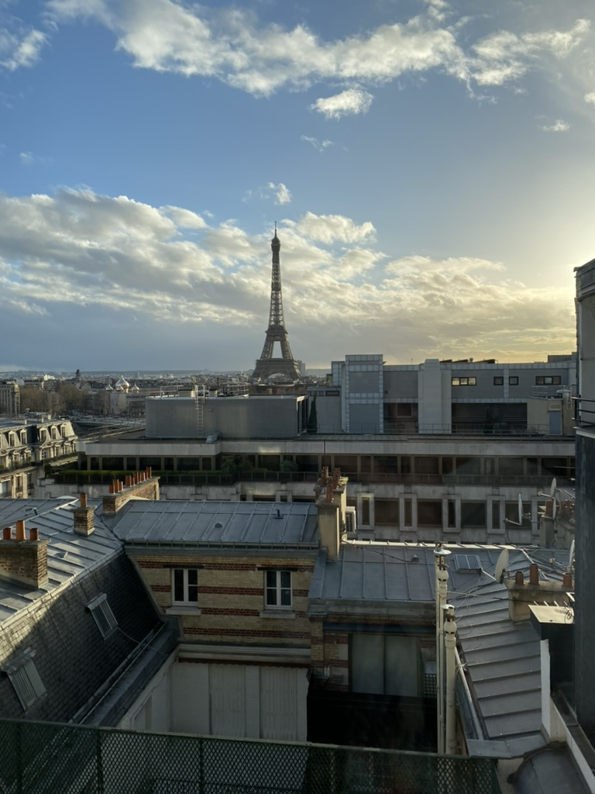
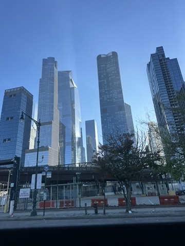
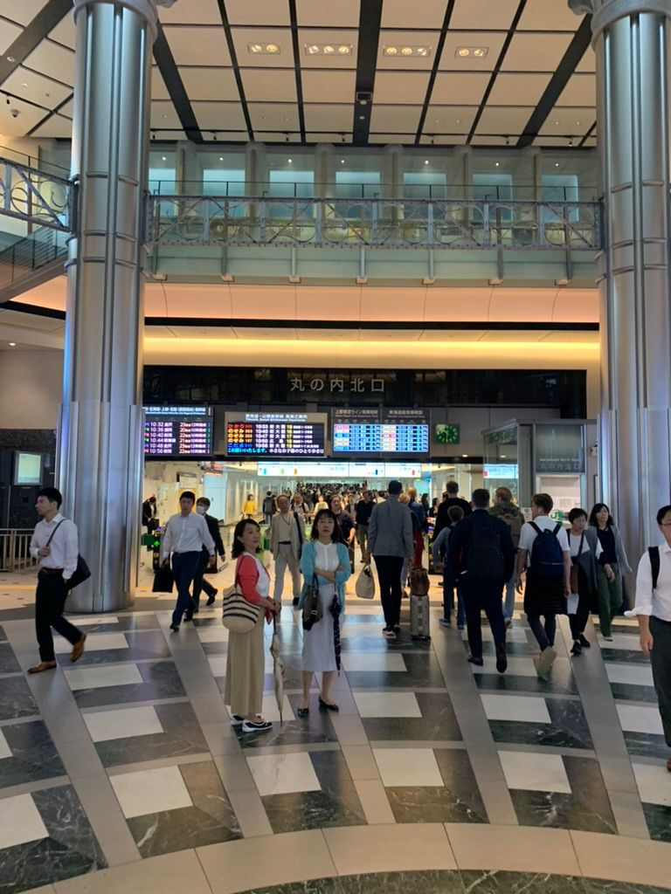
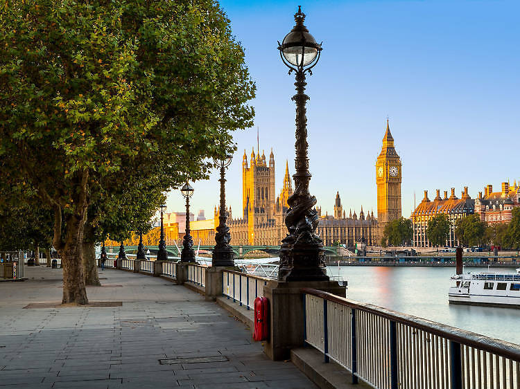
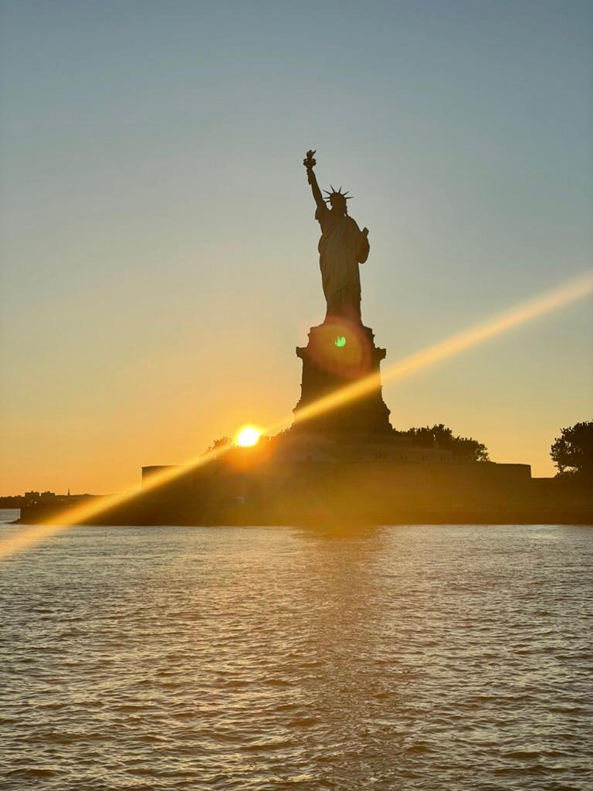
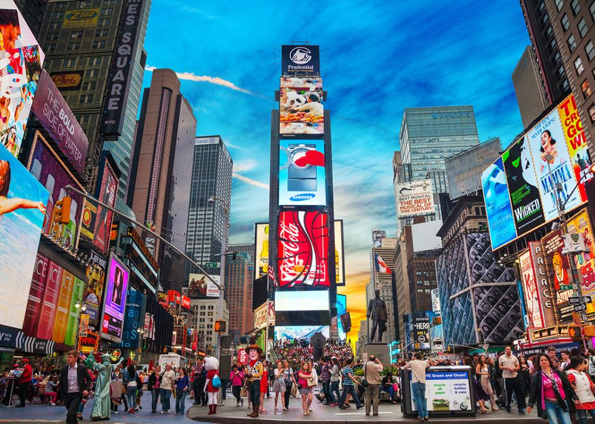
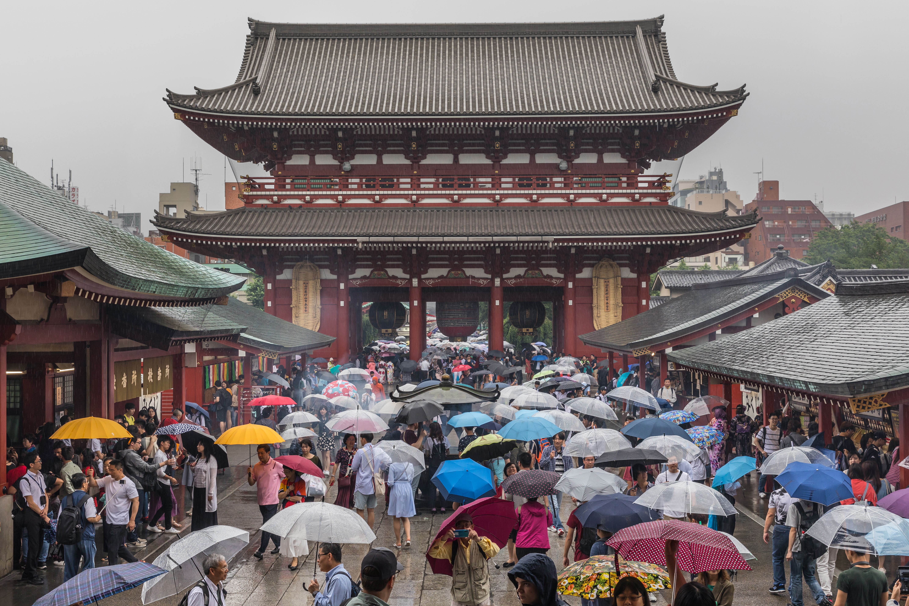

About Me
I’m a traveler and storyteller who finds joy in discovering new cultures, cuisines, and landscapes. What began as mere weekend getaways soon grew into a lifelong journey to explore cultures, landscapes, and communities across the world. Travel has taught me more than any textbook could—about people, resilience, perspective, and beauty in diversity. From watching sunrises in remote mountain villages to navigating bustling street markets, every destination leaves a mark and a memory.
This is why I developed this site—it’s my way of capturing those moments—not just the famous landmarks, but the little things: the kindness of strangers, the smells of local cuisine, the peaceful silence of nature. I created this space not only to document my adventures but also to inspire others to embrace curiosity and chase experiences that make them feel alive. Through it, I hope to share a piece of the world with you!



My Travel Musts
- Pack light but include essentials like a reusable water bottle and comfortable shoes.
- Always research local customs and etiquette before visiting a new place.
- Try at least one local dish you’ve never had before.



My Travel Don’ts
- Don’t overplan your itinerary—leave room for spontaneity.
- Avoid carrying too much cash or valuables.
- Don’t forget to disconnect from technology and immerse yourself in the experience.


